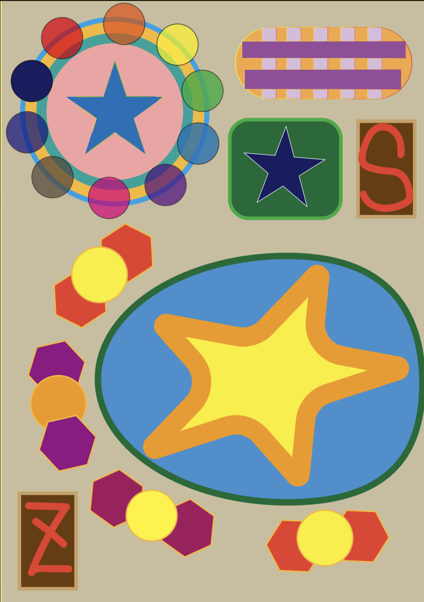
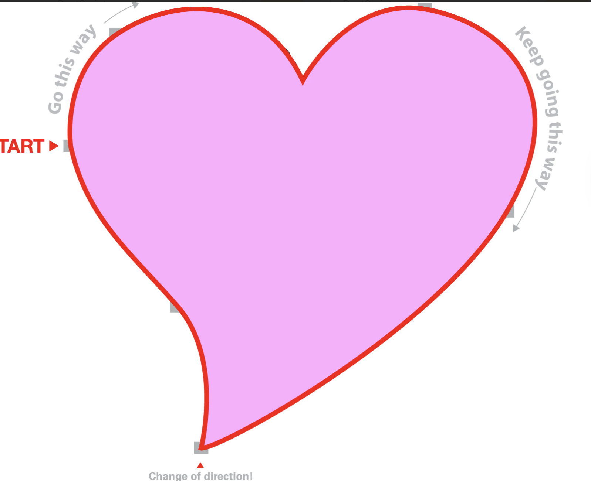
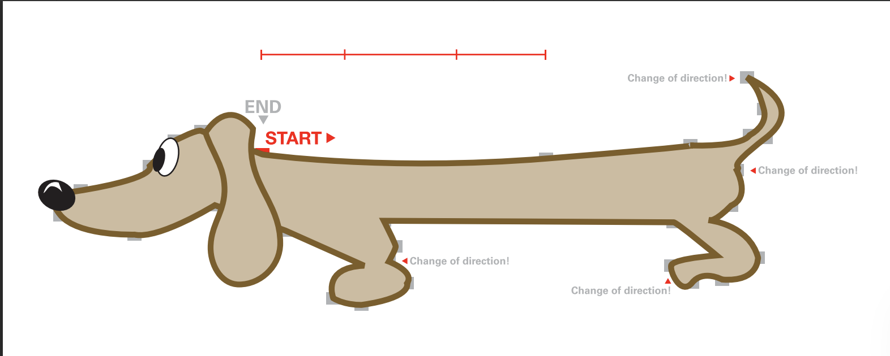
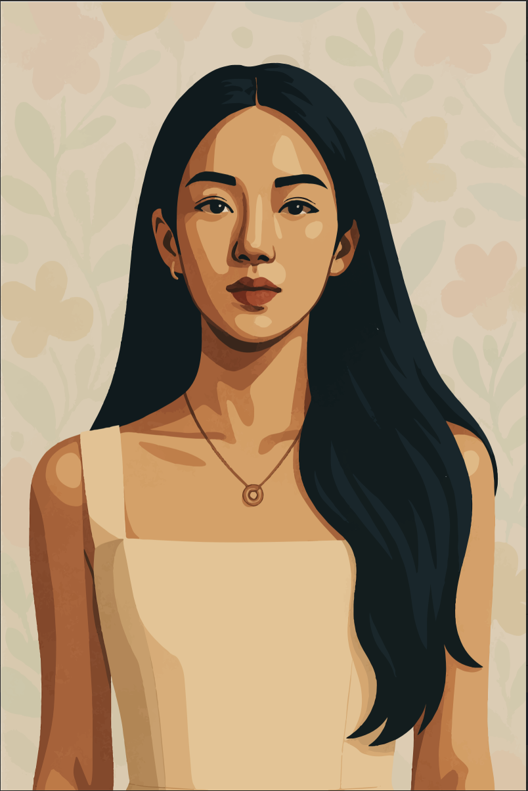

矢量图形作业1：基础形状与色彩
这是我第一次使用Adobe Illustrator制作矢量图形，练习了形状调整、描边粗细修改、色彩搭配等基础技能。
虽然是入门作业，但我花费了很多时间尝试不同的形状组合和布局，也是我建立矢量设计基础的重要作品。
矢量图形作业3：钢笔工具练习
 这个作业专注于练习Illustrator的钢笔工具，心形设计比较简单，主要是平滑曲线的把控；小狗设计则更有挑战，尤其是转折点和图层顺序的调整。
通过这个作业，我对曲线控制和图层逻辑有了更清晰的理解，为后续复杂作品打下了基础。
矢量图形总结作业：叶周人像插画
这个作业要求用Illustrator制作名人矢量肖像，我选择了叶周作为创作对象。从画布设置、参考图导入，到比例辅助线添加，再到钢笔工具勾勒轮廓，每一步都力求精准。
最难的部分是阴影的自然呈现，我通过复习课堂教程，用路径查找器工具添加光影层次，最终完成了这幅无轮廓的扁平化人像。
视频加载中...